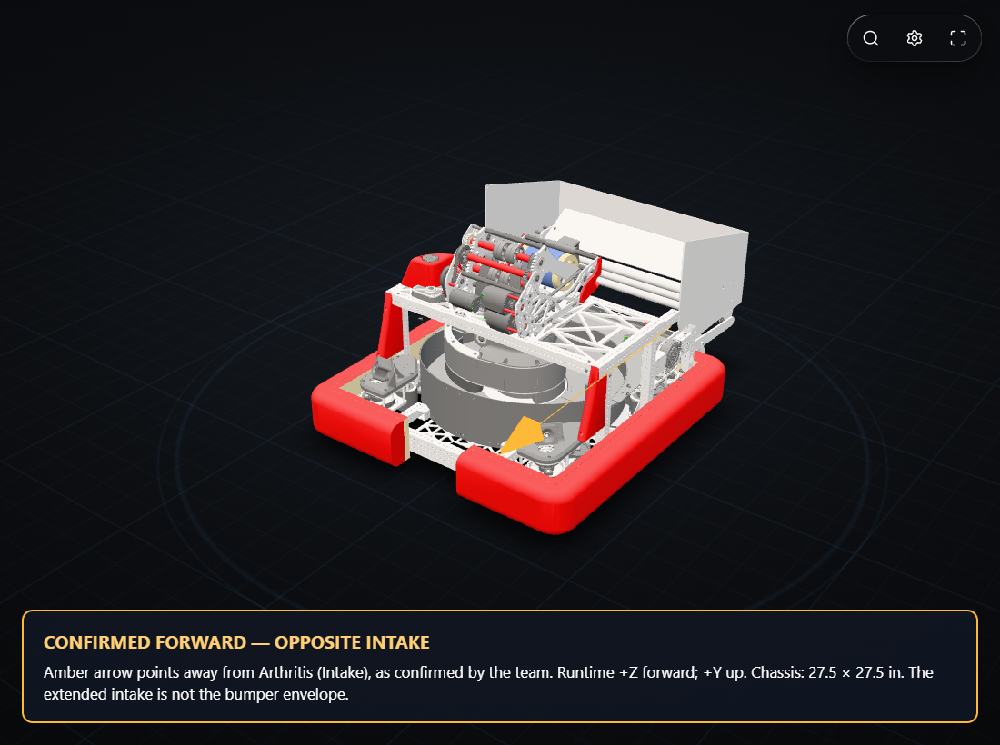
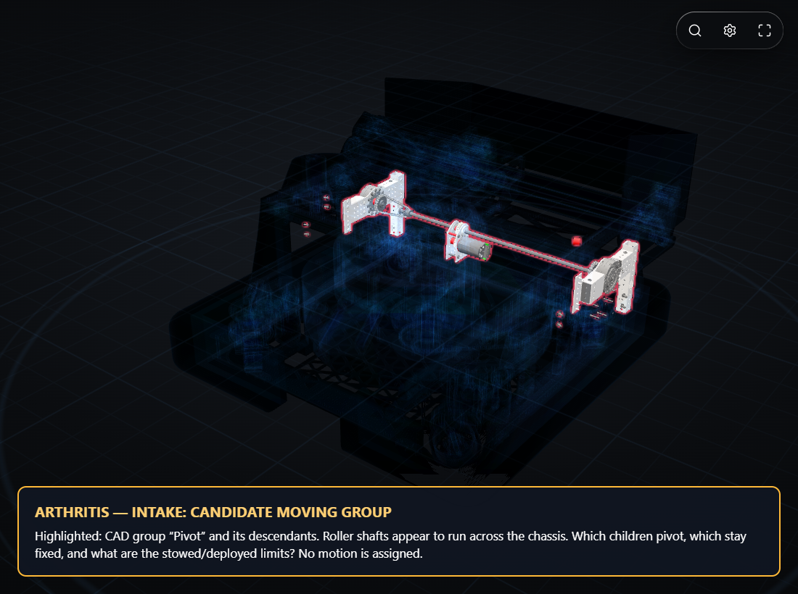
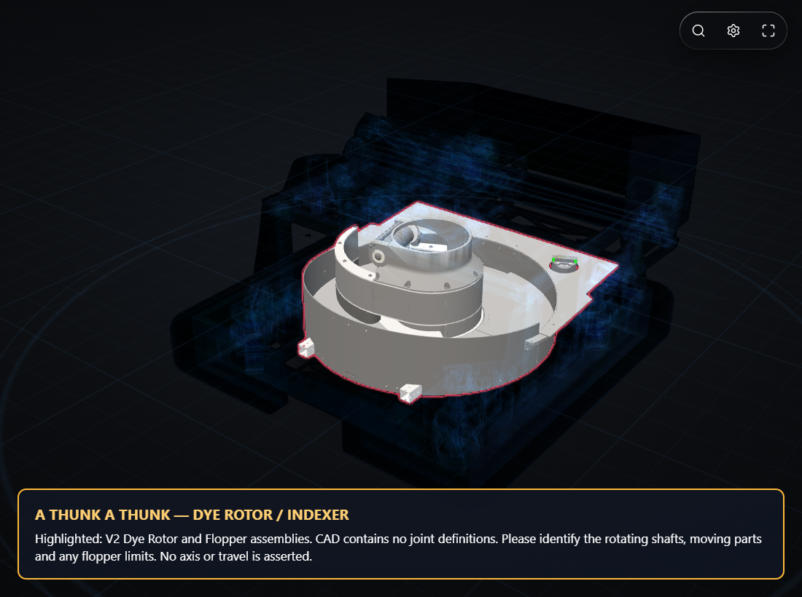
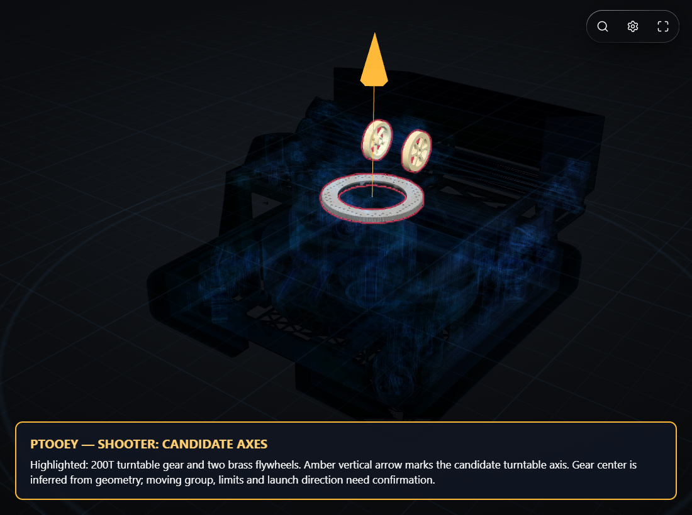
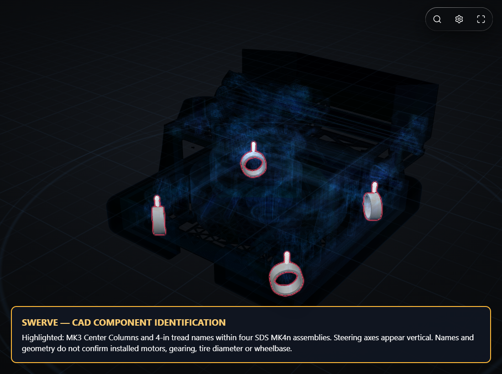

These are annotated renders of your actual CAD. Forward is team-confirmed. Amber mechanism axes indicate hypotheses, not confirmed joints. No uncertain mechanism animation has been enabled.

Amber arrow points away from Arthritis (Intake), as confirmed by the team. Runtime +Z forward; +Y up. Chassis: 27.5 × 27.5 in. The extended intake is not the bumper envelope.

Highlighted: CAD group “Pivot” and its descendants. Roller shafts appear to run across the chassis. Which children pivot, which stay fixed, and what are the stowed/deployed limits? No motion is assigned.

Highlighted: V2 Dye Rotor and Flopper assemblies. CAD contains no joint definitions. Please identify the rotating shafts, moving parts and any flopper limits. No axis or travel is asserted.

Highlighted: 200T turntable gear and two brass flywheels. Amber vertical arrow marks the candidate turntable axis. Gear center is inferred from geometry; moving group, limits and launch direction need confirmation.

Highlighted: MK3 Center Columns and 4-in tread names within four SDS MK4n assemblies. Steering axes appear vertical. Names and geometry do not confirm installed motors, gearing, tire diameter or wheelbase.